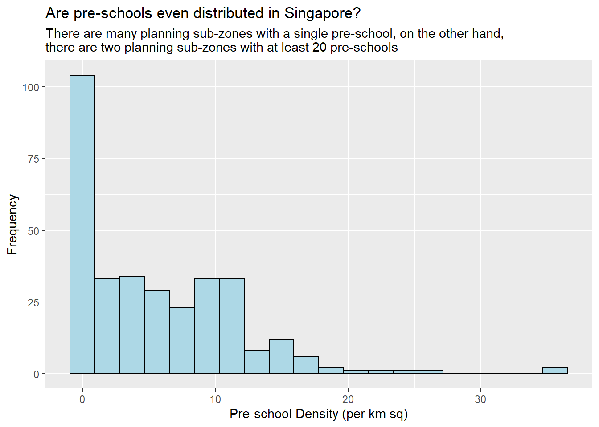

pacman::p_load(sf, tidyverse)Hands-on Exercise 1: Geospatial Wrangling with R
1 Getting Started
1.1 Installing and Loading Packages
2 Geospatial Data
2.1 Importing Geospatial Data
There are 3 geospatial data-sets to import: MP14_SUBZONE_WEB_PL, CyclingPath and PreSchool respectively:
2.1.1 MP14_SUBZONE_WEB_PL: Importing Polygon (MULTIPOLYGON) Feature Data Frame
dsn: define data pathlayer: shapefile name (accepts all extensions - .shp, .dbf, .prj, .shx)
mpsz = st_read(
dsn = "data/geospatial/mpsz",
layer = "MP14_SUBZONE_WEB_PL"
)Reading layer `MP14_SUBZONE_WEB_PL' from data source
`D:\bellekwang\IS415\handson_ex\HE1\data\geospatial\mpsz' using driver `ESRI Shapefile'
Simple feature collection with 323 features and 15 fields
Geometry type: MULTIPOLYGON
Dimension: XY
Bounding box: xmin: 2667.538 ymin: 15748.72 xmax: 56396.44 ymax: 50256.33
Projected CRS: SVY212.1.2 CyclingPath: Importing Polyline (MULTILINESTRING) Feature Data
cyclingpath = st_read(
dsn = "data/geospatial/cyclingpath",
layer = "CyclingPathGazette"
)Reading layer `CyclingPathGazette' from data source
`D:\bellekwang\IS415\handson_ex\HE1\data\geospatial\CyclingPath'
using driver `ESRI Shapefile'
Simple feature collection with 2248 features and 2 fields
Geometry type: MULTILINESTRING
Dimension: XY
Bounding box: xmin: 11854.32 ymin: 28347.98 xmax: 42626.09 ymax: 48948.15
Projected CRS: SVY212.1.3 PreSchool: Importing KML Files
preschool = st_read("data/geospatial/preschools-location.kml")Reading layer `PRESCHOOLS_LOCATION' from data source
`D:\bellekwang\IS415\handson_ex\HE1\data\geospatial\preschools-location.kml'
using driver `KML'
Simple feature collection with 1925 features and 2 fields
Geometry type: POINT
Dimension: XYZ
Bounding box: xmin: 103.6824 ymin: 1.247759 xmax: 103.9897 ymax: 1.462134
z_range: zmin: 0 zmax: 0
Geodetic CRS: WGS 842.2 Understanding sf Data Frame
2.2.1 st_geometry(sf)
Displays number of features, geometry type, projected CRS (coordinate system) and the first 5 geometries.
st_geometry(mpsz)Geometry set for 323 features
Geometry type: MULTIPOLYGON
Dimension: XY
Bounding box: xmin: 2667.538 ymin: 15748.72 xmax: 56396.44 ymax: 50256.33
Projected CRS: SVY21
First 5 geometries:2.2.2 glimpse(sf)
Displays an overview of all the columns.
glimpse(mpsz)Rows: 323
Columns: 16
$ OBJECTID <int> 1, 2, 3, 4, 5, 6, 7, 8, 9, 10, 11, 12, 13, 14, 15, 16, 17, …
$ SUBZONE_NO <int> 1, 1, 3, 8, 3, 7, 9, 2, 13, 7, 12, 6, 1, 5, 1, 1, 3, 2, 2, …
$ SUBZONE_N <chr> "MARINA SOUTH", "PEARL'S HILL", "BOAT QUAY", "HENDERSON HIL…
$ SUBZONE_C <chr> "MSSZ01", "OTSZ01", "SRSZ03", "BMSZ08", "BMSZ03", "BMSZ07",…
$ CA_IND <chr> "Y", "Y", "Y", "N", "N", "N", "N", "Y", "N", "N", "N", "N",…
$ PLN_AREA_N <chr> "MARINA SOUTH", "OUTRAM", "SINGAPORE RIVER", "BUKIT MERAH",…
$ PLN_AREA_C <chr> "MS", "OT", "SR", "BM", "BM", "BM", "BM", "SR", "QT", "QT",…
$ REGION_N <chr> "CENTRAL REGION", "CENTRAL REGION", "CENTRAL REGION", "CENT…
$ REGION_C <chr> "CR", "CR", "CR", "CR", "CR", "CR", "CR", "CR", "CR", "CR",…
$ INC_CRC <chr> "5ED7EB253F99252E", "8C7149B9EB32EEFC", "C35FEFF02B13E0E5",…
$ FMEL_UPD_D <date> 2014-12-05, 2014-12-05, 2014-12-05, 2014-12-05, 2014-12-05…
$ X_ADDR <dbl> 31595.84, 28679.06, 29654.96, 26782.83, 26201.96, 25358.82,…
$ Y_ADDR <dbl> 29220.19, 29782.05, 29974.66, 29933.77, 30005.70, 29991.38,…
$ SHAPE_Leng <dbl> 5267.381, 3506.107, 1740.926, 3313.625, 2825.594, 4428.913,…
$ SHAPE_Area <dbl> 1630379.27, 559816.25, 160807.50, 595428.89, 387429.44, 103…
$ geometry <MULTIPOLYGON [m]> MULTIPOLYGON (((31495.56 30..., MULTIPOLYGON (…2.2.3 head(sf, n=y)
Displays all information of the first n features of the data frame.
head(mpsz, n=5)Simple feature collection with 5 features and 15 fields
Geometry type: MULTIPOLYGON
Dimension: XY
Bounding box: xmin: 25867.68 ymin: 28369.47 xmax: 32362.39 ymax: 30435.54
Projected CRS: SVY21
OBJECTID SUBZONE_NO SUBZONE_N SUBZONE_C CA_IND PLN_AREA_N
1 1 1 MARINA SOUTH MSSZ01 Y MARINA SOUTH
2 2 1 PEARL'S HILL OTSZ01 Y OUTRAM
3 3 3 BOAT QUAY SRSZ03 Y SINGAPORE RIVER
4 4 8 HENDERSON HILL BMSZ08 N BUKIT MERAH
5 5 3 REDHILL BMSZ03 N BUKIT MERAH
PLN_AREA_C REGION_N REGION_C INC_CRC FMEL_UPD_D X_ADDR
1 MS CENTRAL REGION CR 5ED7EB253F99252E 2014-12-05 31595.84
2 OT CENTRAL REGION CR 8C7149B9EB32EEFC 2014-12-05 28679.06
3 SR CENTRAL REGION CR C35FEFF02B13E0E5 2014-12-05 29654.96
4 BM CENTRAL REGION CR 3775D82C5DDBEFBD 2014-12-05 26782.83
5 BM CENTRAL REGION CR 85D9ABEF0A40678F 2014-12-05 26201.96
Y_ADDR SHAPE_Leng SHAPE_Area geometry
1 29220.19 5267.381 1630379.3 MULTIPOLYGON (((31495.56 30...
2 29782.05 3506.107 559816.2 MULTIPOLYGON (((29092.28 30...
3 29974.66 1740.926 160807.5 MULTIPOLYGON (((29932.33 29...
4 29933.77 3313.625 595428.9 MULTIPOLYGON (((27131.28 30...
5 30005.70 2825.594 387429.4 MULTIPOLYGON (((26451.03 30...3 Plotting Geospatial Data
3.1 plot(sf)
The
plot()function is a simple way to plot the data. For better quality plots, tmap should be used.
Default plot: multi-plot of all attributes
plot(mpsz)
3.1.1 Plotting only the Geometry
plot(st_geometry(mpsz))
3.1.2 Plotting Specific Attributes
plot(mpsz["PLN_AREA_N"])
4 Projection
4.1 Assigning EPSG Code to sf Data Frame
4.1.1 Checking CRS of sf Data Frame
st_crs(mpsz)Coordinate Reference System:
User input: SVY21
wkt:
PROJCRS["SVY21",
BASEGEOGCRS["SVY21[WGS84]",
DATUM["World Geodetic System 1984",
ELLIPSOID["WGS 84",6378137,298.257223563,
LENGTHUNIT["metre",1]],
ID["EPSG",6326]],
PRIMEM["Greenwich",0,
ANGLEUNIT["Degree",0.0174532925199433]]],
CONVERSION["unnamed",
METHOD["Transverse Mercator",
ID["EPSG",9807]],
PARAMETER["Latitude of natural origin",1.36666666666667,
ANGLEUNIT["Degree",0.0174532925199433],
ID["EPSG",8801]],
PARAMETER["Longitude of natural origin",103.833333333333,
ANGLEUNIT["Degree",0.0174532925199433],
ID["EPSG",8802]],
PARAMETER["Scale factor at natural origin",1,
SCALEUNIT["unity",1],
ID["EPSG",8805]],
PARAMETER["False easting",28001.642,
LENGTHUNIT["metre",1],
ID["EPSG",8806]],
PARAMETER["False northing",38744.572,
LENGTHUNIT["metre",1],
ID["EPSG",8807]]],
CS[Cartesian,2],
AXIS["(E)",east,
ORDER[1],
LENGTHUNIT["metre",1,
ID["EPSG",9001]]],
AXIS["(N)",north,
ORDER[2],
LENGTHUNIT["metre",1,
ID["EPSG",9001]]]]The EPSG is 9001 when svy21 should be 3414.
4.1.2 Assigning the Correct EPSG Code
mpsz3414 <- st_set_crs(mpsz, 3414)
st_crs(mpsz3414)Coordinate Reference System:
User input: EPSG:3414
wkt:
PROJCRS["SVY21 / Singapore TM",
BASEGEOGCRS["SVY21",
DATUM["SVY21",
ELLIPSOID["WGS 84",6378137,298.257223563,
LENGTHUNIT["metre",1]]],
PRIMEM["Greenwich",0,
ANGLEUNIT["degree",0.0174532925199433]],
ID["EPSG",4757]],
CONVERSION["Singapore Transverse Mercator",
METHOD["Transverse Mercator",
ID["EPSG",9807]],
PARAMETER["Latitude of natural origin",1.36666666666667,
ANGLEUNIT["degree",0.0174532925199433],
ID["EPSG",8801]],
PARAMETER["Longitude of natural origin",103.833333333333,
ANGLEUNIT["degree",0.0174532925199433],
ID["EPSG",8802]],
PARAMETER["Scale factor at natural origin",1,
SCALEUNIT["unity",1],
ID["EPSG",8805]],
PARAMETER["False easting",28001.642,
LENGTHUNIT["metre",1],
ID["EPSG",8806]],
PARAMETER["False northing",38744.572,
LENGTHUNIT["metre",1],
ID["EPSG",8807]]],
CS[Cartesian,2],
AXIS["northing (N)",north,
ORDER[1],
LENGTHUNIT["metre",1]],
AXIS["easting (E)",east,
ORDER[2],
LENGTHUNIT["metre",1]],
USAGE[
SCOPE["Cadastre, engineering survey, topographic mapping."],
AREA["Singapore - onshore and offshore."],
BBOX[1.13,103.59,1.47,104.07]],
ID["EPSG",3414]]4.2 Transforming Projections
preschool3414 <- st_transform(
preschool, crs = 3414
)
head(preschool3414, n=5)Simple feature collection with 5 features and 2 fields
Geometry type: POINT
Dimension: XYZ
Bounding box: xmin: 13258.34 ymin: 35611.04 xmax: 35272.09 ymax: 46634.14
z_range: zmin: 0 zmax: 0
Projected CRS: SVY21 / Singapore TM
Name
1 kml_1
2 kml_2
3 kml_3
4 kml_4
5 kml_5
Description
1 <center><table><tr><th colspan='2' align='center'><em>Attributes</em></th></tr><tr bgcolor="#E3E3F3"> <th>CENTRE_NAME</th> <td>BRILLIANT TOTS PTE. LTD.</td> </tr><tr bgcolor=""> <th>CENTRE_CODE</th> <td>PT9334</td> </tr><tr bgcolor="#E3E3F3"> <th>ADDRESS</th> <td>610, JURONG WEST STREET 65, #01 - 534, S 640610</td> </tr><tr bgcolor=""> <th>POSTAL_CODE</th> <td>640610</td> </tr><tr bgcolor="#E3E3F3"> <th>INC_CRC</th> <td>0523C7904478A63D</td> </tr><tr bgcolor=""> <th>FMEL_UPD_D</th> <td>20200812235534</td> </tr></table></center>
2 <center><table><tr><th colspan='2' align='center'><em>Attributes</em></th></tr><tr bgcolor="#E3E3F3"> <th>CENTRE_NAME</th> <td>BUBBLESLAND PLAYHOUSE PTE LTD</td> </tr><tr bgcolor=""> <th>CENTRE_CODE</th> <td>PT7680</td> </tr><tr bgcolor="#E3E3F3"> <th>ADDRESS</th> <td>238, COMPASSVALE WALK, #01 - 542, S 540238</td> </tr><tr bgcolor=""> <th>POSTAL_CODE</th> <td>540238</td> </tr><tr bgcolor="#E3E3F3"> <th>INC_CRC</th> <td>18BED05A501AA168</td> </tr><tr bgcolor=""> <th>FMEL_UPD_D</th> <td>20200812235534</td> </tr></table></center>
3 <center><table><tr><th colspan='2' align='center'><em>Attributes</em></th></tr><tr bgcolor="#E3E3F3"> <th>CENTRE_NAME</th> <td>BUCKET HOUSE PRESCHOOL</td> </tr><tr bgcolor=""> <th>CENTRE_CODE</th> <td>PT9527</td> </tr><tr bgcolor="#E3E3F3"> <th>ADDRESS</th> <td>39, WOODLANDS CLOSE, #01 - 62, MEGA@WOODLANDS, S 737856</td> </tr><tr bgcolor=""> <th>POSTAL_CODE</th> <td>737856</td> </tr><tr bgcolor="#E3E3F3"> <th>INC_CRC</th> <td>C88B9AC31EE71BF6</td> </tr><tr bgcolor=""> <th>FMEL_UPD_D</th> <td>20200812235534</td> </tr></table></center>
4 <center><table><tr><th colspan='2' align='center'><em>Attributes</em></th></tr><tr bgcolor="#E3E3F3"> <th>CENTRE_NAME</th> <td>BUMBLE BEE CHILD CARE CENTRE</td> </tr><tr bgcolor=""> <th>CENTRE_CODE</th> <td>PT3150</td> </tr><tr bgcolor="#E3E3F3"> <th>ADDRESS</th> <td>369, WOODLANDS AVENUE 1, #01 - 853, S 730369</td> </tr><tr bgcolor=""> <th>POSTAL_CODE</th> <td>730369</td> </tr><tr bgcolor="#E3E3F3"> <th>INC_CRC</th> <td>64AB8FACA8F60129</td> </tr><tr bgcolor=""> <th>FMEL_UPD_D</th> <td>20200812235534</td> </tr></table></center>
5 <center><table><tr><th colspan='2' align='center'><em>Attributes</em></th></tr><tr bgcolor="#E3E3F3"> <th>CENTRE_NAME</th> <td>BUSY BEES SINGAPORE PTE LTD</td> </tr><tr bgcolor=""> <th>CENTRE_CODE</th> <td>PT9117</td> </tr><tr bgcolor="#E3E3F3"> <th>ADDRESS</th> <td>327B, ANCHORVALE ROAD, #01 - 322, S 542327</td> </tr><tr bgcolor=""> <th>POSTAL_CODE</th> <td>542327</td> </tr><tr bgcolor="#E3E3F3"> <th>INC_CRC</th> <td>E1B55AC65B9059E8</td> </tr><tr bgcolor=""> <th>FMEL_UPD_D</th> <td>20200812235534</td> </tr></table></center>
geometry
1 POINT Z (13258.34 35611.04 0)
2 POINT Z (35272.09 41373.42 0)
3 POINT Z (25050.54 46634.14 0)
4 POINT Z (22892.48 46127.66 0)
5 POINT Z (34155.79 41949.13 0)5 Aspatial Data
5.1 Importing Data
listings <- read_csv("data/aspatial/listings.csv")5.2 Understanding the Data
list() instead of glimpse()
list(listings)[[1]]
# A tibble: 3,037 × 18
id name host_id host_…¹ neigh…² neigh…³ latit…⁴ longi…⁵ room_…⁶ price
<dbl> <chr> <dbl> <chr> <chr> <chr> <dbl> <dbl> <chr> <dbl>
1 71609 Ensuite… 367042 Belinda East R… Tampin… 1.35 104. Privat… 46437
2 71896 B&B Ro… 367042 Belinda East R… Tampin… 1.35 104. Privat… 81
3 71903 Room 2-… 367042 Belinda East R… Tampin… 1.35 104. Privat… 81
4 275343 Amazing… 1439258 Kay Centra… Bukit … 1.29 104. Privat… 52
5 275344 15 mins… 1439258 Kay Centra… Bukit … 1.29 104. Privat… 49
6 289234 Booking… 367042 Belinda East R… Tampin… 1.34 104. Privat… 175
7 294281 5 mins … 1521514 Elizab… Centra… Newton 1.31 104. Privat… 79
8 324945 Cozy Bl… 1439258 Kay Centra… Bukit … 1.29 104. Privat… 49
9 330089 Cozy Bl… 1439258 Kay Centra… Bukit … 1.29 104. Privat… 55
10 330095 10 mins… 1439258 Kay Centra… Bukit … 1.29 104. Privat… 55
# … with 3,027 more rows, 8 more variables: minimum_nights <dbl>,
# number_of_reviews <dbl>, last_review <date>, reviews_per_month <dbl>,
# calculated_host_listings_count <dbl>, availability_365 <dbl>,
# number_of_reviews_ltm <dbl>, license <chr>, and abbreviated variable names
# ¹host_name, ²neighbourhood_group, ³neighbourhood, ⁴latitude, ⁵longitude,
# ⁶room_type5.3 Creating sf Data Frame
listings_sf <- st_as_sf(
listings,
coords = c("longitude", "latitude"),
crs = 4326
) %>%
st_transform(crs = 3414)glimpse(listings_sf)Rows: 3,037
Columns: 17
$ id <dbl> 71609, 71896, 71903, 275343, 275344, 28…
$ name <chr> "Ensuite Room (Room 1 & 2) near EXPO", …
$ host_id <dbl> 367042, 367042, 367042, 1439258, 143925…
$ host_name <chr> "Belinda", "Belinda", "Belinda", "Kay",…
$ neighbourhood_group <chr> "East Region", "East Region", "East Reg…
$ neighbourhood <chr> "Tampines", "Tampines", "Tampines", "Bu…
$ room_type <chr> "Private room", "Private room", "Privat…
$ price <dbl> 46437, 81, 81, 52, 49, 175, 79, 49, 55,…
$ minimum_nights <dbl> 92, 92, 92, 60, 60, 92, 92, 60, 60, 60,…
$ number_of_reviews <dbl> 20, 24, 47, 22, 14, 12, 133, 17, 12, 4,…
$ last_review <date> 2020-01-17, 2019-10-13, 2020-01-09, 20…
$ reviews_per_month <dbl> 0.15, 0.17, 0.33, 0.19, 0.11, 0.09, 1.0…
$ calculated_host_listings_count <dbl> 6, 6, 6, 46, 46, 6, 7, 46, 46, 46, 6, 7…
$ availability_365 <dbl> 242, 242, 305, 273, 281, 242, 365, 274,…
$ number_of_reviews_ltm <dbl> 0, 0, 0, 2, 1, 0, 0, 3, 2, 1, 1, 0, 0, …
$ license <chr> NA, NA, NA, "S0399", "S0399", NA, NA, "…
$ geometry <POINT [m]> POINT (41972.5 36390.05), POINT (…6 Geoprocessing
Scenario: The authority is planning to upgrade the exiting cycling path. To do so, they need to acquire 5 metres of reserved land on the both sides of the current cycling path. You are tasked to determine the extend of the land need to be acquired and their total area.
- Compute 5-meter buffers around cycling paths
- Calculate the are of buffers
- Calculate the sum of total land involved
buffer_cycling <- st_buffer(cyclingpath, dist = 5, nQuadSegs = 30)nQuadSegs: number of line segments used to approximate a quarter circle
buffer_cycling$AREA <- st_area(buffer_cycling)sum(buffer_cycling$AREA)1556978 [m^2]Answer: 1556978 [m^2]
Scenario:
A pre-school service group want to find out the numbers of pre-schools in each Planning Subzone.
- Identify pre-schools located inside each Planning Subzone
- Calculate number of pre-schools in each Planning Subzone
- List the Planning Subzone with most number of pre-school
mpsz3414$`PreSch Count` <- lengths(st_intersects(mpsz3414, preschool3414))summary(mpsz3414$`PreSch Count`) Min. 1st Qu. Median Mean 3rd Qu. Max.
0.00 0.00 3.00 5.96 9.00 58.00 top_n(mpsz3414, 1, `PreSch Count`)Simple feature collection with 1 feature and 16 fields
Geometry type: MULTIPOLYGON
Dimension: XY
Bounding box: xmin: 39655.33 ymin: 35966 xmax: 42940.57 ymax: 38622.37
Projected CRS: SVY21 / Singapore TM
OBJECTID SUBZONE_NO SUBZONE_N SUBZONE_C CA_IND PLN_AREA_N PLN_AREA_C
1 189 2 TAMPINES EAST TMSZ02 N TAMPINES TM
REGION_N REGION_C INC_CRC FMEL_UPD_D X_ADDR Y_ADDR SHAPE_Leng
1 EAST REGION ER 21658EAAF84F4D8D 2014-12-05 41122.55 37392.39 10180.62
SHAPE_Area geometry PreSch Count
1 4339824 MULTIPOLYGON (((42196.76 38... 58top_n(x, n, wt):n: top n rows
wt: ordering by variable (optional)
Scenario:
Calculate density of pre-school by planning subzone.
- Calculate area of each planning subzone
- Compute density
mpsz3414$Area <- mpsz3414 %>%
st_area()mpsz3414 <- mpsz3414 %>%
mutate(`PreSch Density` = `PreSch Count`/Area * 1000000)hist(mpsz3414$`PreSch Density`)
To make it look prettier:
ggplot(
data = mpsz3414,
aes(x=as.numeric(`PreSch Density`))
) +
geom_histogram(
bins = 20,
color = "black",
fill = "light blue"
) +
labs(
title = "Are pre-schools even distributed in Singapore?",
subtitle = "There are many planning sub-zones with a single pre-school, on the other hand, \nthere are two planning sub-zones with at least 20 pre-schools",
x = "Pre-school Density (per km sq)",
y = "Frequency"
)
Relationship between Pre-school Density and Pre-school Count
ggplot(data=mpsz3414,
aes(y = `PreSch Count`,
x= as.numeric(`PreSch Density`)))+
geom_point(color="black",
fill="light blue") +
xlim(0, 40) +
ylim(0, 40) +
labs(title = "",
x = "Pre-school density (per km sq)",
y = "Pre-school count")